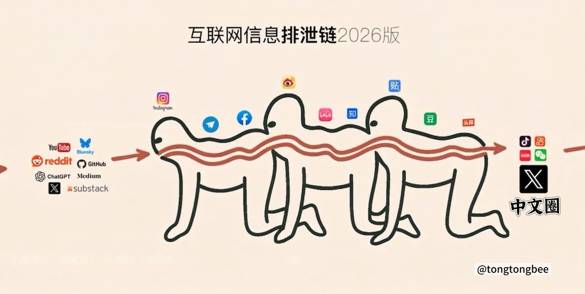

🍀🍥竹蜻蜓🍥🍀
@zqtlovekris99
@YukinonCC 每個平台都逃不過越來越多低質的命運

ユキ🎀
@YukinonCC
你x中文圈的搬💩风还确实是这样子的
好多几千fo、上万fo的大v每天从早到晚就找些叠满水印的、从各种平台搜集的💩图
关键是这个每个流量都不低，更加促进了搬💩，马斯克的给钱（工资）更是恶性循环，挤压了高质量内容的空间 https://t.co/1g2MP1O5KY